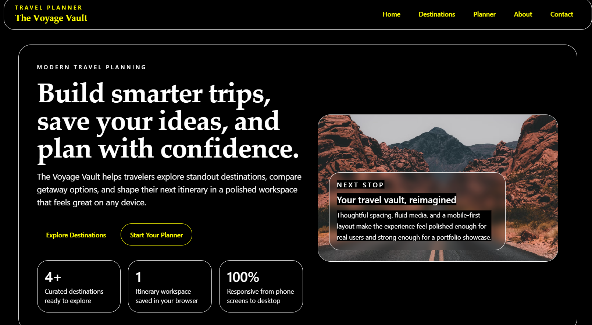
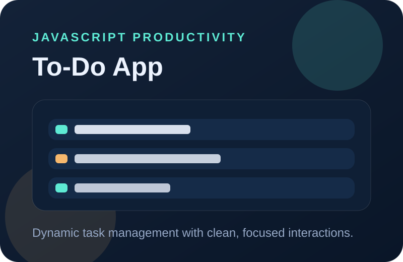
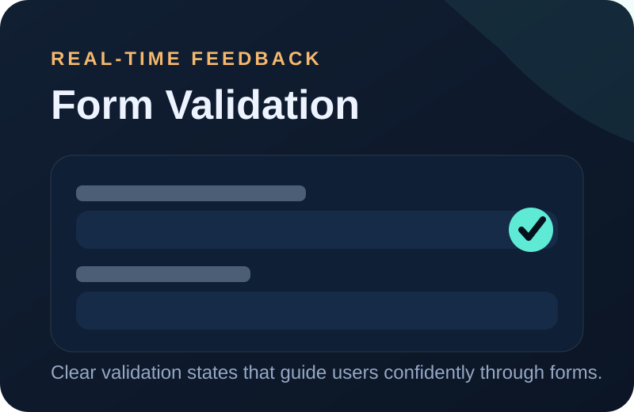
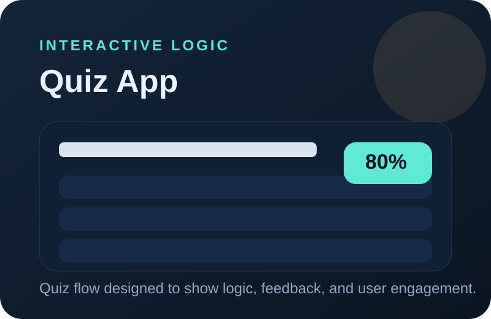

Junior Developer Portfolio
Boipelo Moabi
Front-End Developer
I build clean, responsive web experiences with HTML, CSS, and JavaScript, bringing a problem-solving mindset shaped by engineering, technical support, and hands-on troubleshooting.
- South Africa
- boipelomoabi6@gmail.com
- GitHub
Profile Snapshot
Turning technical discipline into modern front-end solutions.
About
From engineering systems to crafting digital experiences.
My journey into software development started with a strong technical foundation in Electrical Engineering (N1-N6), where I learned to think analytically and solve structured problems. That same curiosity pushed me toward front-end development, where I discovered how much I enjoy building user-focused interfaces.
Along the way, I have worked as a Diesel Mechanic Apprentice at Vukile Auto and I am currently an LPU Technician at Chule Projects. These roles strengthened my troubleshooting skills, attention to detail, and ability to stay calm while solving real-world technical issues.
Today, I am focused on growing as a front-end developer, building responsive web applications, learning modern workflows, and creating polished digital products that are practical, accessible, and professional.
Skills
Core tools and technologies I use to build and learn.
HTML
CSS
JavaScript
Git & GitHub
Responsive Design
APIs
ChatGPT
GitHub Copilot
Problem Solving
Analytical Thinking
Troubleshooting
Projects
Selected work that shows my growth in front-end development.
Featured Project

The Voyage Vault
A travel planner web application that helps users browse destinations, plan trips, and save itineraries through a clean and responsive interface.

To-Do App
A dynamic task management app built with JavaScript, focused on productivity, interactivity, and clean user experience.

Form Validation App
A JavaScript form project with real-time validation to improve usability and guide users with clear feedback.

Interactive Quiz App
A logic-driven JavaScript quiz app that demonstrates interactivity, user feedback, and dynamic content handling.
Contact